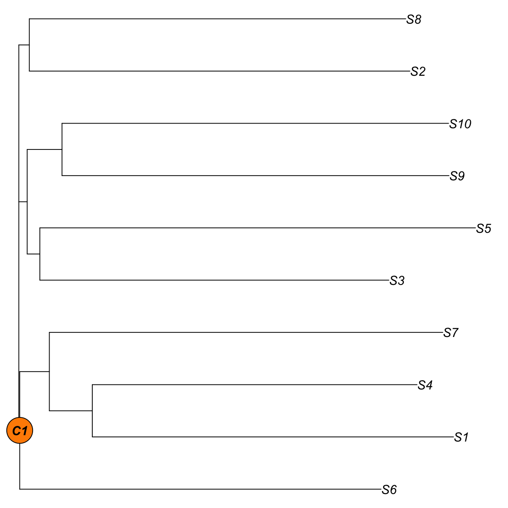
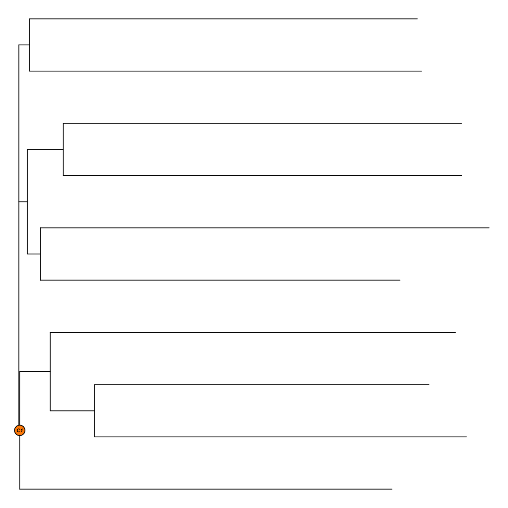

Description
visTreeBSclust is supposed to obtain clusters from a
bootstrapped tree.
Usage
visTreeBSclust(tree_bs, bootstrap.cutoff = 80, max.fraction = 1, min.size = 3, visTree = TRUE,
plot.phylo.arg = NULL, nodelabels.arg = NULL, verbose = TRUE, ...)
Arguments
- tree_bs
- an "phylo" object storing a bootstrapped tree
- bootstrap.cutoff
- an integer specifying bootstrap-derived
clusters
- max.fraction
- the maximum fraction of leaves contained in a
cluster
- min.size
- the minumum number of leaves contained in a cluster
- visTree
- logical to indicate whether the tree will be visualised.
By default, it sets to true for display
- plot.phylo.arg
- a list of main parameters used in the function
"ape::plot.phylo" http://rdrr.io/cran/ape/man/plot.phylo.html.
See 'Note' below for details on the parameters
- nodelabels.arg
- a list of main parameters used in the function
"ape::nodelabels" http://rdrr.io/cran/ape/man/nodelabels.html.
See 'Note' below for details on the parameters
- verbose
- logical to indicate whether the messages will be
displayed in the screen. By default, it sets to true for display
- ...
- additional "ape::plot.phylo" parameters
Value
a data frame following components:
Samples: the labels for tip nodes (samples)
Clusters: the clusters each tip node belongs to;
unassigned tip nodes will be the cluster called 'C0'
Clans: the internal node id for each cluster
Note
A list of main parameters used in the function "ape::plot.phylo":
- "type": a character string specifying the type of phylogeny to be
drawn; it must be one of "phylogram" (the default), "cladogram", "fan",
"unrooted", "radial" or any unambiguous abbreviation of these
- "direction": a character string specifying the direction of the
tree. Four values are possible: "rightwards" (the default),
"leftwards", "upwards", and "downwards"
- "lab4ut": (= labels for unrooted trees) a character string
specifying the display of tip labels for unrooted trees: either
"horizontal" where all labels are horizontal (the default), or "axial"
where the labels are displayed in the axis of the corresponding
terminal branches. This option has an effect only if type = "unrooted"
- "edge.color": a vector of mode character giving the colours used
to draw the branches of the plotted phylogeny. These are taken to be in
the same order than the component edge of phy. If fewer colours are
given than the length of edge, then the colours are recycled
- "edge.width": a numeric vector giving the width of the branches
of the plotted phylogeny. These are taken to be in the same order than
the component edge of phy. If fewer widths are given than the length of
edge, then these are recycled
- "edge.lty": same than the previous argument but for line types;
1: plain, 2: dashed, 3: dotted, 4: dotdash, 5: longdash, 6: twodash
- "font": an integer specifying the type of font for the labels: 1
(plain text), 2 (bold), 3 (italic, the default), or 4 (bold italic)
- "cex": a numeric value giving the factor scaling of the tip and
node labels (Character EXpansion). The default is to take the current
value from the graphical parameters
- "adj": a numeric specifying the justification of the text strings
of the labels: 0 (left-justification), 0.5 (centering), or 1
(right-justification). This option has no effect if type="unrooted". If
NULL (the default) the value is set with respect of direction (see
details)
- "srt": a numeric giving how much the labels are rotated in
degrees (negative values are allowed resulting in clock-like rotation);
the value has an effect respectively to the value of direction (see
Examples). This option has no effect if type="unrooted"
- "no.margin": a logical. If TRUE, the margins are set to zero and
the plot uses all the space of the device
- "label.offset": a numeric giving the space between the nodes and
the tips of the phylogeny and their corresponding labels. This option
has no effect if type="unrooted"
- "rotate.tree": for "fan", "unrooted", or "radial" trees: the
rotation of the whole tree in degrees (negative values are accepted
A list of main parameters used in the function "ape::nodelabels":
- "text": a vector of mode character giving the text to be printed.
By default, the labels for internal nodes (see "node.label"), that is,
the bootstrap values associated with internal nodes
- "node": a vector of mode numeric giving the numbers of the nodes
where the text or the symbols are to be printed. By default, indexes
for internal nodes, that is, (
Ntip+1):(Ntip+Nnode),
where Ntip is the number of tip nodes and Nnode for the
number of internal nodes
- "adj": one or two numeric values specifying the horizontal and
vertical, respectively, justification of the text or symbols. By
default, the text is centered horizontally and vertically. If a single
value is given, this alters only the horizontal position of the text
- "frame": a character string specifying the kind of frame to be
printed around the text. This must be one of "rect" (the default),
"circle", "none", or any unambiguous abbreviation of these
- "cex": a numeric value giving the factor scaling of the tip and
node labels (Character EXpansion). The default is to take the current
value from the graphical parameters
- "font": an integer specifying the type of font for the labels: 1
(plain text), 2 (bold), 3 (italic, the default), or 4 (bold italic)
- "col": a character string giving the color to be used for the
text or the plotting symbols; this is eventually recycled
- "bg": a character string giving the color to be used for the
background of the text frames or of the plotting symbols if it applies;
this is eventually recycled. It can be one of "jet" (jet colormap),
"bwr" (blue-white-red colormap), "gbr" (green-black-red colormap),
"wyr" (white-yellow-red colormap), "br" (black-red colormap), "yr"
(yellow-red colormap), "wb" (white-black colormap), and "rainbow"
(rainbow colormap, that is, red-yellow-green-cyan-blue-magenta).
Alternatively, any hyphen-separated HTML color names, e.g.
"blue-black-yellow", "royalblue-white-sandybrown",
"darkgreen-white-darkviolet". A list of standard color names can be
found in http://html-color-codes.info/color-names
Examples
# 1) generate an iid normal random matrix of 100x10
data <- matrix( rnorm(100*10,mean=0,sd=1), nrow=100, ncol=10)
colnames(data) <- paste(rep('S',10), seq(1:10), sep="")
data <- t(data)
# 2) build neighbor-joining tree with bootstrap values and visualise it by default
tree_bs <- visTreeBootstrap(data)
Start at 2017-03-27 18:55:40
First, build the tree (using nj algorithm and euclidean distance) from input matrix (10 by 100)...
Second, perform bootstrap analysis with 100 replicates...
Finally, visualise the bootstrapped tree...
Finish at 2017-03-27 18:55:40
Runtime in total is: 0 secs
# 3) obtain clusters from a bootstrapped tree
res <- visTreeBSclust(tree_bs, bootstrap.cutoff=80)
1 internal nodes with >= 80 bootstrap value
1 internal nodes each with <= 10 leaves
1 internal nodes each with >= 3 leaves
As a result, 1 clusters are found

## hide tip labels and modify the font of internal node labels
res <- visTreeBSclust(tree_bs, bootstrap.cutoff=80,
nodelabels.arg=list(cex=0.4), show.tip.label=FALSE)
1 internal nodes with >= 80 bootstrap value
1 internal nodes each with <= 10 leaves
1 internal nodes each with >= 3 leaves
As a result, 1 clusters are found

){kind=link}
){kind=link}
){kind=link}